[Java] 43. Web Spring frameworkのviewで使うプログラム言語(JSTL) - 関数、データベース
こんにちは。明月です。
この投稿はWeb Spring frameworkのviewで使うプログラム言語(JSTL) - 関数、データベースに関する説明です。
以前の投稿でJSTL言語のコア―とフォーマットライブラリに関して説明しました。
コア―はJSTLの言語でよく使うライブラリだし、フォーマットも最近momentのJavascriptライブラリがあって前よりよく使わないですが、よく使うライブラリの一つです。
ここで使う関数ライブラリは文字の関するライブラリですが、普通は文字処理に関してはJSPファイルで処理することよりサーバ側、Controller側に処理した後、結果だけ出力することが普通です。
もちろん、データベースライブラリもJSPファイルで処理することよりController側で処理することが普通です。
つまり、最近はよく使うライブラリではないですが、以前にはよく使うライブラリだったし、仕様によって使われる可能性があるので簡単に説明します。
関数ライブラリ
コア―とフォーマットライブラリはJSTLをタグタイプに使いました。でも、関数ライブラリは値を表す方式がドルマークと中括弧(${データ})形式に使います。
文字含め可否 fn:contains(string, sbustring)
<%@ page language="java" contentType="text/html; charset=UTF-8" pageEncoding="UTF-8"%> <!-- コア―ライブラリ --> <%@ taglib prefix="c" uri="http://java.sun.com/jsp/jstl/core"%> <!-- 関数ライブラリ --> <%@ taglib prefix="fn" uri="http://java.sun.com/jsp/jstl/functions"%> <!-- HTMLタグ開始 --> <!DOCTYPE html> <html> <head> <meta charset="UTF-8"> <title>Insert title here</title> </head> <body> <!-- 変数宣言 --> <c:set var="name" value="hello world"/> <!-- 変数のnameにworldが含めているならtrue --> <c:if test="${fn:contains(name, 'world')}"> <!-- 画面出力 --> Hello world </c:if> </body> </html>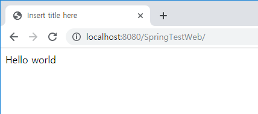
文字含め可否(大小文字無視) fn:containsIgnoreCase(string, sbustring)
<%@ page language="java" contentType="text/html; charset=UTF-8" pageEncoding="UTF-8"%> <!-- コア―ライブラリ --> <%@ taglib prefix="c" uri="http://java.sun.com/jsp/jstl/core"%> <!-- 関数ライブラリ --> <%@ taglib prefix="fn" uri="http://java.sun.com/jsp/jstl/functions"%> <!-- HTMLタグ開始 --> <!DOCTYPE html> <html> <head> <meta charset="UTF-8"> <title>Insert title here</title> </head> <body> <!-- 変数宣言 --> <c:set var="name" value="hello world"/> <!-- 変数のnameにWORLDが大小文字に関係ず、含めているtrue --> <c:if test="${fn:containsIgnoreCase(name, 'WORLD')}"> <!-- 画面出力 --> Hello world </c:if> </body> </html>文字列がprefixで始まる可否 fn:startsWith(string, prefix)
<%@ page language="java" contentType="text/html; charset=UTF-8" pageEncoding="UTF-8"%> <!-- コア―ライブラリ --> <%@ taglib prefix="c" uri="http://java.sun.com/jsp/jstl/core"%> <!-- 関数ライブラリ --> <%@ taglib prefix="fn" uri="http://java.sun.com/jsp/jstl/functions"%> <!-- HTMLタグ開始 --> <!DOCTYPE html> <html> <head> <meta charset="UTF-8"> <title>Insert title here</title> </head> <body> <!-- 変数宣言 --> <c:set var="name" value="hello world"/> <!-- 変数のnameの文字列がrldに始まる場合 true --> <c:if test="${fn:startsWith(name, 'hello')}"> <!-- 画面出力 --> Hello world </c:if> </body> </html>文字列がsuffixで終わる可否 fn:endsWith(string, suffix)
<%@ page language="java" contentType="text/html; charset=UTF-8" pageEncoding="UTF-8"%> <!-- コア―ライブラリ --> <%@ taglib prefix="c" uri="http://java.sun.com/jsp/jstl/core"%> <!-- 関数ライブラリ --> <%@ taglib prefix="fn" uri="http://java.sun.com/jsp/jstl/functions"%> <!-- HTMLタグ開始 --> <!DOCTYPE html> <html> <head> <meta charset="UTF-8"> <title>Insert title here</title> </head> <body> <!-- 変数宣言 --> <c:set var="name" value="hello world"/> <!-- 変数のnameの文字列がrldに終わる場合 true --> <c:if test="${fn:endsWith(name, 'rld')}"> <!-- 画面出力 --> Hello world </c:if> </body> </html>特殊文字(<, >, &, ', ")をxmlエンティティコード(<, >, &, ', ")に変換 fn:escapeXml(string)
<%@ page language="java" contentType="text/html; charset=UTF-8" pageEncoding="UTF-8"%> <!-- コア―ライブラリ --> <%@ taglib prefix="c" uri="http://java.sun.com/jsp/jstl/core"%> <!-- 関数ライブラリ --> <%@ taglib prefix="fn" uri="http://java.sun.com/jsp/jstl/functions"%> <!-- HTMLタグ開始 --> <!DOCTYPE html> <html> <head> <meta charset="UTF-8"> <title>Insert title here</title> </head> <body> <!-- 変数宣言 --> <c:set var="name" value="< , > , & , ' , \" " /> <!-- 変数のnameの特殊文字を変換 --> ${fn:escapeXml(name)} </body> </html>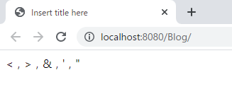
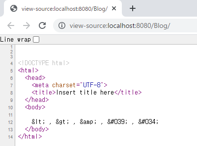
一致する文字列のインデックス fn:indexOf(string, sbustring)
<%@ page language="java" contentType="text/html; charset=UTF-8" pageEncoding="UTF-8"%> <!-- コア―ライブラリ --> <%@ taglib prefix="c" uri="http://java.sun.com/jsp/jstl/core"%> <!-- 関数ライブラリ --> <%@ taglib prefix="fn" uri="http://java.sun.com/jsp/jstl/functions"%> <!-- HTMLタグ開始 --> <!DOCTYPE html> <html> <head> <meta charset="UTF-8"> <title>Insert title here</title> </head> <body> <!-- 変数宣言 --> <c:set var="name" value="hello world"/> <!-- world単語の位置を変換 --> ${fn:indexOf(name, "world")} </body> </html>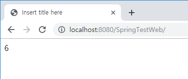
文字列をseparatorの文字によって配列に分離 fn:split(string, separator)
<%@ page language="java" contentType="text/html; charset=UTF-8" pageEncoding="UTF-8"%> <!-- コア―ライブラリ --> <%@ taglib prefix="c" uri="http://java.sun.com/jsp/jstl/core"%> <!-- 関数ライブラリ --> <%@ taglib prefix="fn" uri="http://java.sun.com/jsp/jstl/functions"%> <!-- HTMLタグ開始 --> <!DOCTYPE html> <html> <head> <meta charset="UTF-8"> <title>Insert title here</title> </head> <body> <!-- 変数宣言 --> <c:set var="name" value="hello,world,good"/> <!-- name変数を,で区分して配列に分離 --> <c:set var="arr" value="${fn:split(name,',')}"/> <!-- 配列タイプなので繰り返し文で出力 --> <c:forEach var="ret" items="${arr}"> <!-- 画面出力 --> ${ret} <br /> </c:forEach> </body> </html>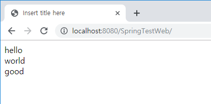
配列をseparatorの文字で結合 fn:join(array, separator)
<%@ page language="java" contentType="text/html; charset=UTF-8" pageEncoding="UTF-8"%> <!-- コア―ライブラリ --> <%@ taglib prefix="c" uri="http://java.sun.com/jsp/jstl/core"%> <!-- 関数ライブラリ --> <%@ taglib prefix="fn" uri="http://java.sun.com/jsp/jstl/functions"%> <!-- HTMLタグ開始 --> <!DOCTYPE html> <html> <head> <meta charset="UTF-8"> <title>Insert title here</title> </head> <body> <!-- 変数宣言 --> <c:set var="name" value="hello,world,good"/> <!-- name変数を,で区分して配列に分離 --> <c:set var="arr" value="${fn:split(name,',')}"/> <!-- 配列arrを***で結合 --> <c:set var="join" value="${fn:join(arr,'***')}"/> <!-- 画面出力 --> ${join} </body> </html>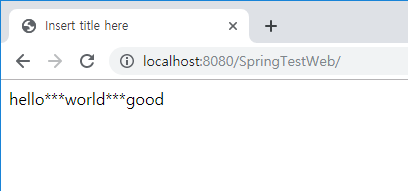
文字列の長さを返却 fn:length(string)
<%@ page language="java" contentType="text/html; charset=UTF-8" pageEncoding="UTF-8"%> <!-- コア―ライブラリ --> <%@ taglib prefix="c" uri="http://java.sun.com/jsp/jstl/core"%> <!-- 関数ライブラリ --> <%@ taglib prefix="fn" uri="http://java.sun.com/jsp/jstl/functions"%> <!-- HTMLタグ開始 --> <!DOCTYPE html> <html> <head> <meta charset="UTF-8"> <title>Insert title here</title> </head> <body> <!-- 変数宣言 --> <c:set var="name" value="hello world"/> <!-- 長さ出力 --> ${fn:length(name)} </body> </html>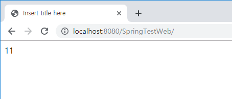
string文字列内でbefore文字列をafter文字列に変換 fn:replace(string, before, after)
<%@ page language="java" contentType="text/html; charset=UTF-8" pageEncoding="UTF-8"%> <!-- コア―ライブラリ --> <%@ taglib prefix="c" uri="http://java.sun.com/jsp/jstl/core"%> <!-- 関数ライブラリ --> <%@ taglib prefix="fn" uri="http://java.sun.com/jsp/jstl/functions"%> <!-- HTMLタグ開始 --> <!DOCTYPE html> <html> <head> <meta charset="UTF-8"> <title>Insert title here</title> </head> <body> <!-- 変数宣言 --> <c:set var="name" value="hello world"/> <!-- 文字列worldをhomeに変換して出力 --> ${fn:replace(name,"world", "home")} </body> </html>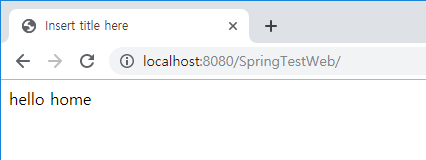
string文字列をbeforeからafterまで切り fn:substring(string, before, after)
<%@ page language="java" contentType="text/html; charset=UTF-8" pageEncoding="UTF-8"%> <!-- コア―ライブラリ --> <%@ taglib prefix="c" uri="http://java.sun.com/jsp/jstl/core"%> <!-- 関数ライブラリ --> <%@ taglib prefix="fn" uri="http://java.sun.com/jsp/jstl/functions"%> <!-- HTMLタグ開始 --> <!DOCTYPE html> <html> <head> <meta charset="UTF-8"> <title>Insert title here</title> </head> <body> <!-- 変数宣言 --> <c:set var="name" value="hello world"/> <!-- 文字列worldを6文字から8まで出力 --> ${fn:substring(name,6,8)} </body> </html>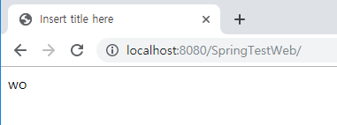
string文字列のsbustring以降の文字を返却 fn:substringAfter(string, sbustring)
<%@ page language="java" contentType="text/html; charset=UTF-8" pageEncoding="UTF-8"%> <!-- コア―ライブラリ --> <%@ taglib prefix="c" uri="http://java.sun.com/jsp/jstl/core"%> <!-- 関数ライブラリ --> <%@ taglib prefix="fn" uri="http://java.sun.com/jsp/jstl/functions"%> <!-- HTMLタグ開始 --> <!DOCTYPE html> <html> <head> <meta charset="UTF-8"> <title>Insert title here</title> </head> <body> <!-- 変数宣言 --> <c:set var="name" value="hello world"/> <!-- 文字列wo以降文字列を出力 --> ${fn:substringAfter(name,"wo")} </body> </html>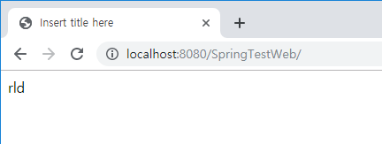
string文字列のsbustring以前の文字を返却 fn:substringBefore(string, sbustring)
<%@ page language="java" contentType="text/html; charset=UTF-8" pageEncoding="UTF-8"%> <!-- コア―ライブラリ --> <%@ taglib prefix="c" uri="http://java.sun.com/jsp/jstl/core"%> <!-- 関数ライブラリ --> <%@ taglib prefix="fn" uri="http://java.sun.com/jsp/jstl/functions"%> <!-- HTMLタグ開始 --> <!DOCTYPE html> <html> <head> <meta charset="UTF-8"> <title>Insert title here</title> </head> <body> <!-- 変数宣言 --> <c:set var="name" value="hello world"/> <!-- 文字列wo以前の文字列を出力 --> ${fn:substringBefore(name,"wo")} </body> </html>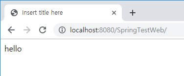
文字列を小文字に変換 fn:toLowerCase(string)
<%@ page language="java" contentType="text/html; charset=UTF-8" pageEncoding="UTF-8"%> <!-- コア―ライブラリ --> <%@ taglib prefix="c" uri="http://java.sun.com/jsp/jstl/core"%> <!-- 関数ライブラリ --> <%@ taglib prefix="fn" uri="http://java.sun.com/jsp/jstl/functions"%> <!-- HTMLタグ開始 --> <!DOCTYPE html> <html> <head> <meta charset="UTF-8"> <title>Insert title here</title> </head> <body> <!-- 変数宣言 --> <c:set var="name" value="HELLO WORLD"/> <!-- 小文字に変換して出力 --> ${fn:toLowerCase(name)} </body> </html>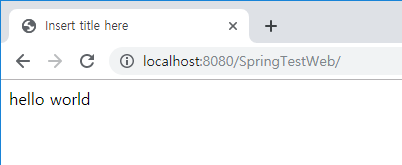
文字列を大文字に変換 fn:toUpperCase(string)
<%@ page language="java" contentType="text/html; charset=UTF-8" pageEncoding="UTF-8"%> <!-- コア―ライブラリ --> <%@ taglib prefix="c" uri="http://java.sun.com/jsp/jstl/core"%> <!-- 関数ライブラリ --> <%@ taglib prefix="fn" uri="http://java.sun.com/jsp/jstl/functions"%> <!-- HTMLタグ開始 --> <!DOCTYPE html> <html> <head> <meta charset="UTF-8"> <title>Insert title here</title> </head> <body> <!-- 変数宣言 --> <c:set var="name" value="hello world"/> <!-- 大文字に変換して出力 --> ${fn:toUpperCase(name)} </body> </html>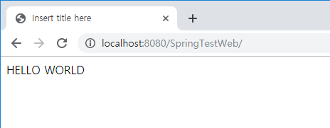
文字列の前後の空白を取り除く fn:trim(string)
<%@ page language="java" contentType="text/html; charset=UTF-8" pageEncoding="UTF-8"%> <!-- コア―ライブラリ --> <%@ taglib prefix="c" uri="http://java.sun.com/jsp/jstl/core"%> <!-- 関数ライブラリ --> <%@ taglib prefix="fn" uri="http://java.sun.com/jsp/jstl/functions"%> <!-- HTMLタグ開始 --> <!DOCTYPE html> <html> <head> <meta charset="UTF-8"> <title>Insert title here</title> </head> <body> <!-- 変数宣言 --> <c:set var="name" value=" hello world "/> <!-- 空白を取り除く --> ${fn:trim(name)} </body> </html>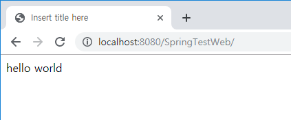
データベースライブラリ
普通、データベースの接続はJSPファイルですることではなく、ControllerのJavaのクラスファイルで接続してデータを処理します。そしてviewで出力する形が基本です。つまり、このデータベースライブラリは実はほぼ使わないライブラリです。
でも、地域化(localization)やメッセージデータを取得するためにたまに処理する場合もあるので分かった方がよいです。
JSTLでデータベースを使うために一応DB connectorが必要です。
私はmysqlで例を確認しましょう。
<dependency> <groupId>mysql</groupId> <artifactId>mysql-connector-java</artifactId> <version>5.1.41</version> </dependency><%@ page language="java" contentType="text/html; charset=UTF-8" pageEncoding="UTF-8"%> <!-- コア―ライブラリ --> <%@ taglib prefix="c" uri="http://java.sun.com/jsp/jstl/core"%> <!-- データベースライブラリ --> <%@ taglib prefix="sql" uri="http://java.sun.com/jsp/jstl/sql"%> <!-- HTMLタグ開始 --> <!DOCTYPE html> <html> <head> <meta charset="UTF-8"> <title>Insert title here</title> </head> <body> <!-- コネクションタグ --> <sql:setDataSource url="jdbc:mysql://localhost:3306/test" driver="com.mysql.jdbc.Driver" user="id" password="pw" var="ds" scope="application" /> <!-- クエリタグdataSourceはsql:setDataSourceの変数 --> <sql:query var="rs" scope="page" dataSource="${ds}" maxRows="10" startRow="0"> select * from datatest where idx=? <sql:param value="1" /> <!-- パラメータ設定 --> </sql:query> <table> <tr> <!-- 結果カラム数ほど繰り返し。 --> <c:forEach var="columnName" items="${rs.columnNames}"> <!-- カラム名を出力 --> <td><c:out value="${columnName}" /></td> </c:forEach> </tr> <!-- データの結果数ほど繰り返し --> <c:forEach var="row" items="${rs.rowsByIndex}"> <tr> <!-- カラム数ほど結果を繰り返し --> <c:forEach var="columnValue" items="${row}"> <td><c:out value="${columnValue}" /></td> </c:forEach> </tr> </c:forEach> </table> </body> </html>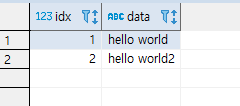
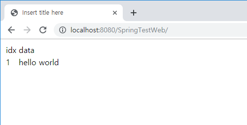
次の投稿ではJSTLのXMLライブラリを整理します。
ここまでWeb Spring frameworkのviewで使うプログラム言語(JSTL) - 関数、データベースに関する説明でした。
ご不明なところや間違いところがあればコメントしてください。
- [Java] 50. JPAプロジェクトでDAOクラスを作成する方法2019/10/15 20:12:35
- [Java] 49. JPAでトランザクション(transaction)を扱う方法と共通関数作成する方法(Observerパターン)2019/10/14 20:13:44
- [Java] 48. JPAでQueryを使う方法(JPQLクエリを作成する方法)2019/10/13 22:55:52
- [Java] 47. JPAのEntityクラスのリファレンス設定(cascade, fetch)2019/10/13 00:40:08
- [Java] 46. JPAのEntityクラスの基本設定(@GeneratedValue、 @ManyToMany)2019/10/11 07:30:14
- [Java] 45. JPAを設定する方法2019/10/10 07:29:43
- [Java] 44. Web Spring frameworkのviewで使うプログラム言語(JSTL) - XML2019/10/09 07:34:08
- [Java] 43. Web Spring frameworkのviewで使うプログラム言語(JSTL) - 関数、データベース2019/10/08 07:43:33
- [Java] 42. Web Spring frameworkのviewで使うプログラム言語(JSTL) - コア―、フォーマット2019/10/07 07:38:13
- [Java] 41. Web Spring webframeworkのControllerからajaxの要請する時、jsonタイプのデータを返却する方法2019/10/04 19:24:43
- [Java] 40. Web Spring frameworkでControllerを扱う方法2019/10/03 20:02:06
- [Java] 39. Spring Web Frameworkを利用してウェブサービスプロジェクトを作成する方法2019/10/02 21:00:22
- [Java] 38. Javaでウェブサービスプロジェクト(JSP Servlet)を作成する方法2019/10/01 21:48:08
- [Java] 37.イクリプス(eclipse)でトムキャット(tomcat)を設定する方法2019/09/30 22:19:34
- [Java] 36.コーディングする時、よく使うコーディングパターンとステップ数を減らす方法2019/09/27 20:39:09
- [Java] 61. Spring bootでRedisデータベースを利用してセッションクラスタリング設定する方法2022/03/01 18:20:52
- [Java] 60. Spring bootでApacheの連結とロードバランシングを設定する方法2022/02/28 18:45:48
- [Java] 59. Spring bootのJPAでEntityManagerを使い方2022/02/25 18:27:48
- [Java] 58. EclipseでSpring bootのJPAを設定する方法2022/02/23 18:11:10
- [Java] 57. EclipseでSpring bootを設定する方法2022/02/22 19:04:49
- [Python] Redisデータベースに接続して使い方2022/02/21 18:23:49
- [Java] Redisデータベースを接続して使い方(Jedisライブラリ)2022/02/16 18:13:17
- [C#] Redisのデータベースを接続して使い方2022/02/15 18:46:09
- [CentOS] Redisデータベースをインストールする方法とコマンドを使い方2022/02/14 18:33:07
- [Design pattern] 3-6. ステートパターン(State pattern)2021/11/17 20:04:47
- [Design pattern] 3-5. メメントパターン(Memento pattern)2021/11/16 20:01:36
- [Design pattern] 3-4. イテレータパターン(Iterator pattern)2021/11/15 19:31:28
- [CentOS] Linux環境(CentOS)でCassandra(NoSQL DB)をインストールする方法(DBeaverブラウザでNoSQL使い方)2021/11/12 17:33:58
- [Design pattern] 3-3. コマンドパターン(Command pattern)2021/11/05 17:01:42
- [Window] apache-tomcatでロードバランシング(Load balancing)する方法とセッションクラスタリング（セッション共有）2021/11/05 16:58:45